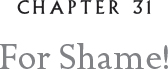

Your little secret is out.
The words of the treacherous Peregrine Falcon Glynnis haunted me in my waking hours as well as in my dreams. The slipgizzles at the Nacht Sted had robbed us of any chance at secrecy and surprise, and it was difficult for me to tell General Andricus the devastating news.
“To what extent did she betray our strategy, Lyze?” the general asked.
“We can’t be sure,” I answered.
“We have to assume the worst.” He paused, deep in thought. “Which means we need a new surprise, a new strategy.”
I looked at him blankly. Like what? I wanted to ask, but I resisted.
“Where are Moss and the snow leopards now?”
“They’ve moved to a new black site to complete their training.”
“Well, good! That’s a start. And how is their training going?”
“They’re a strong team.” I didn’t want to think of the snow leopard Patches, stabbed in the haunch by one of my fire spikes.
“Look, Lyze, we have to go with what we’ve got. A strong team now finishing their training in an undisclosed location.” He paused. “We’re scant moons from what is supposed to be the start of the invasion.”
“I know,” I said softly. I was sick with worry and, for the life of me, I couldn’t comprehend why the general seemed almost jovial.
“Furthermore, rumors are flying that Bylyric is beginning to move his troops into position.”
“I’ve heard,” I said.
“But there have been no sightings of Bylyric himself.”
“Oh.”
“Oh, you say. That’s interesting, isn’t it?”
“Yes, it is,” I said, but I struggled to understand why.
“I wager he’s still holed up somewhere in the Ice Talons.” The general’s black eyes glinted meaningfully at me.
“Sir, what exactly are you driving at?”
“Surprise, Major General Lyze Megascops! Surprise. We invade them! You and your Glauxspeed unit go straight for Bylyric! Take him out, and his whole army collapses.”
My beak dropped open.
“Don’t you see it, lad? This is the perfect situation. Now’s the time.” And as he explained, I began to see his peculiar logic.

As the nights grew warmer, the hard ice began to soften. We owls are creatures of the north. We love the cold and the sparkling clear skies of deep winter, when the constellations burn their brightest. We even like the shrieking winds and the stinging sheets of snow, but winter is not the best time for combat. The same brightness of air that reveals the stars lays bare our troops. The long, never-ending nights we love in peace can cause an owl at war to lose track of time and fight beyond his natural endurance. No, spring and summer are the war months. The skies roil with thick, oily clouds perfect for camouflaged flights or what we called HALO, or High Altitude Low Opening operations.
Snowies and Great Grays are perfect for HALO ops. They blend in seamlessly with the cloud cover and can hover down and drop in Kielian snake ground troops or slipgizzles. This was how we planned to discover the whereabouts of Bylyric.
We doubled our training. The division was coming together, and Ifghar was doing much better. He had changed after we separated him from Gragg. As soon as we put them in different units, Ifghar seemed to develop a better attitude. He adapted to a new snake and made new friends in his unit. Some, I must admit, were more impressive than others. It disturbed me slightly that he was drawn to owls who seemed to me easily influenced. His companions didn’t quite have a sense of service to a greater goal. I was concerned, but I had a lot on my mind with the spring offensive a few short moons away.
There is really never any quiet time on Dark Fowl Island. Toward the end of the night, troops began to fly in from the forward operating bases, and the din is unbelievable. For myself, when the evening training sessions finished, there were always strategy sessions and weapons reviews.
One evening, just as the last real darkness began to shred before the dawn, I was making my way over to visit Cronin, the quartermaster. Thora and I had planned to meet there to look over weapons that might need refitting before spring. I paused for a moment by a grog tree where a certain old Snowy, a very popular fellow known as the “blink skog of Dark Fowl,” was telling an old story about the myschgrad serpent, a legendary snake who lived at the bottom of the sea. It was said that when the serpent twitched, the earth convulsed, and fire sprang from the depths of the sea. I only meant to stay for a minute — I had no need of tales of twitching serpents, not when I knew Bylyric and his troops would soon be bearing down upon us. But there was something so mesmerizing about the way the blind skog told this tale, and I had been hoping that Ifghar would show up.
I hardly ever had time to talk to him these days, and sometimes I wondered if he was avoiding me. Our exchanges on the training field were almost perfunctory. I knew he was deeply proud of the special battle claws I had Orf make for him when he first arrived, but he had never thanked me for them.
When Ifghar didn’t appear, I lofted myself into the air. My business at the quartermaster’s hollow didn’t take long, and once Thora and I finished reviewing the various flails, billy hooks, and hot blades, I proposed we go by the grog tree again to see if we could catch Ifghar. On the way, we heard a scuffle that appeared to be coming from a stand of birch trees.
“Someone’s crying or — or mewling,” Thora said.
I heard it, too, and voices as well. We made a tight banking turn and headed for the stand of trees, alighting very quietly in the top of the tallest birch. I wilfed when I recognized the taunting voice of my brother, my baby brother! He had his talon crunched down on the port wing of a small Sooty Owl called Cadet Gabi Tyto-Ten.
“Forgot your claws, Gabi?” Ifghar sneered. “And why ya got that Sooty face? Not a true Barn Owl?”
“Got a hagsfiend for a mum?” asked a Spotted Owl.
The other cadets laughed, but the worst laugh of all came from Gragg, who curled up on Gabi’s other wing and raised up his cudgel-shaped head to slam it down with a sickening crunch. Thora let loose with loud screeches and swooped down on the bullies.
I took a mighty swipe at Gragg’s sensitive mid region and immediately his head snapped back into its normal shape. “Didn’t know I knew that trick,33 did you, you half-wit?” I yelled.
Thora ripped off Ifghar’s battle claws.
“You can’t do that. Those are mine!” Ifghar howled.
“Oh, yes, she can!” I thundered at him. Cadet Gabi Tyto-Ten had a broken rachis, the central shaft in one of her primaries, and she was bleeding from a torn calamus.34 The wound was not irreparable, but Cadet Gabi wouldn’t be flight ready for some time. This was beyond rhotgort, a small rule infraction. This was actually vroknenplonk — an offense that could get all of them de-commed.
The bullies wilfed down to half their size. Gragg’s once-fat head was now the size of a bingle berry.
I fixed my gaze on each one of them for several seconds, but saved most of my fury for Ifghar. “This is not the matter of a rhotgort,” I said.
“Yeah, yeah, sure —” Ifghar began to talk nervously. “I mean, take away my battle claws for a while. I’ve learned my lesson.”
“Shut up, Ifghar,” I roared. “This is not a matter of a rhotgort because you have injured a cadet. Cadet Gabi Tyto-Ten will not be able to fly. You have committed the gravest of offenses. For shame, Ifghar. For shame on all of you!” I was trembling with anger.
“It was just a joke, for Glaux’s sake,” Ifghar protested. There was a desperate note in his voice that made him sound as if he were fighting for breath. It had no effect on me.
“It wasn’t a joke!” I stormed. “You are all of you bullies and you have committed a treasonous act. This is a matter for vroknenplonk.”
The young owls gasped.
Three nights later the Vroknen, the high military court, found Ifghar, Gragg, and their two owl friends guilty of treason. They were given dishonorable discharges, except for Ifghar, who was spared because his mother and father had both served so long and illustriously as officers of the Kielian League. He was permitted to plead guilty to the lesser crime of conduct unbecoming to a cadet. Ifghar was put in the brig for the remainder of his training and would only be allowed to serve in noncombat situations. His battle claws, as the custom decreed, were melted down.
“We’ll use the metal for a pellet pot,” Thora sneered. Owls in the brig were not permitted to go outside to yarp pellets. When the call of nature came, they were reduced to yarping in a pot.